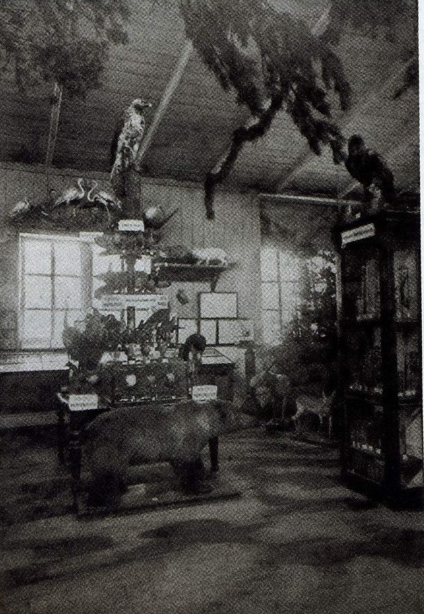

История казанского зоопарка
Ботанический сад в г. Казани является одним из старейших в Европе. Изначально он был основан 8 декабря 1806 года профессором Карлом Фуксом на территории Казанского Университета и располагался на площади 2,25 гектара – таким образом Ботанический сад начал развиваться с небольшой теплицы.

{kind=link}
Карл Федорович Фукс (18.09.1776 г. – 24.04.1846 г.) - основатель казанской школы натуралистов. Неудивительно, что идея создания в Казани ботанического сада принадлежит именно ему, а в пору его ректорства был выстроен архитектурный ансамбль главного здания Казанского университета, ставший «визитной карточкой», по которой он легко узнается и сейчас людьми во всем мире.
В 1824 году ботаническим садом стал заведовать профессор Эдуард Иванович Эйхвальд (1795-1876 гг.). Это была лучшая пора для Ботанического сада, жаль, что продлилась она недолго. Именно профессор Эйхвальд поднял на заседании Совета Университета вопрос об изыскании нового места для ботанического сада.
К судьбе и работе Ботанического сада проявлял живой интерес выдающийся ученый-математик, ректор Казанского Университета Николай Иванович Лобачевский (1792-1856 гг.) в годы своей научно-практической деятельности в Университете (1811-1846 гг.).
Профессор ботаники Александр Александрович Бунге (1803-1890 гг.) стал первым директором ботанического сада на новой территории, именно при нем 20 мая 1834 года был разработан проект каменной оранжереи на 5 отделений. Большой каменный корпус оранжереи, неоднократно перестроенный, располагается на территории Казанского зооботсада до настоящего времени.
С 1937 г. по 1952 г. для увеличения количества посетителей в зимнее время на улице Баумана (бывш. Большая Проломная) функционировал филиал Зооботсада, куда осенью перевозили часть коллекции, а весной возвращали обратно.